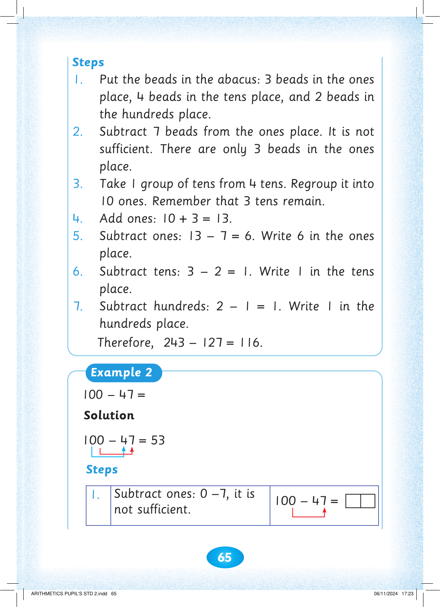
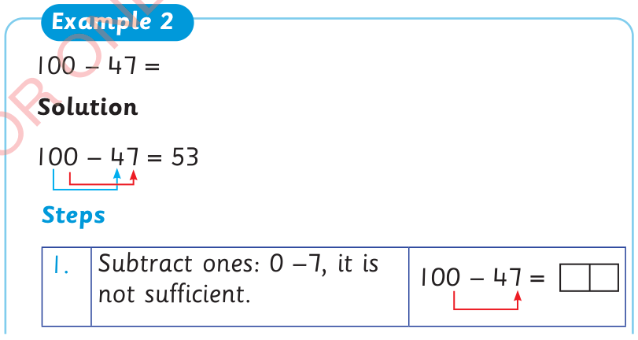
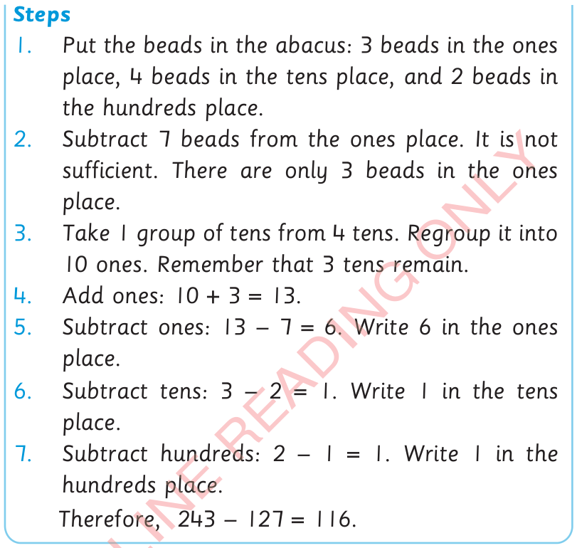

65

Steps
1. Put the beads in the abacus: 3 beads in the ones

place, 4 beads in the tens place, and 2 beads in

the hundreds place.

2. Subtract 7 beads from the ones place. It is not


sufficient. There are only 3 beads in the ones place.
3. Take 1 group of tens from 4 tens. Regroup it into
10 ones. Remember that 3 tens remain.
4. Add ones: 10 + 3 = 13.
5. Subtract ones: 13 – 7 = 6. Write 6 in the ones place.
6. Subtract tens: 3 – 2 = 1. Write 1 in the tens place.
7. Subtract hundreds: 2 – 1 = 1. Write 1 in the hundreds place.
Therefore, 243 – 127 = 116.
Example 2
100 - 47 =
Solution
100 – 47 = 53
Steps
1.
Subtract ones: 0 –7, it is not sufficient.
100 – 47 =



ARITHMETICS PUPIL'S STD 2.indd 65
06/11/2024 17:23